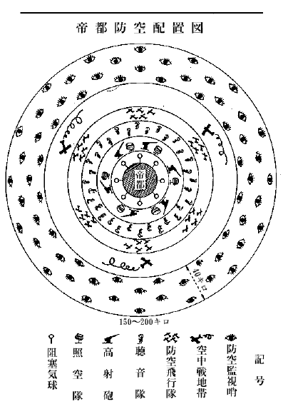
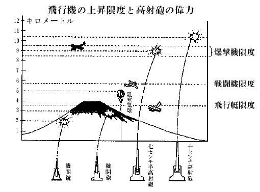

――昭和×年三月、帝都郊外の若きサラリーマンの家庭――
「まあ、今日はお帰りが遅かったのネ」
「うんフラフラになる程
「やはり会社の御用でしたの」
「そうなんだ。会社は東京の電灯を
「空襲ですって！ 空襲って、敵の飛行機のやってくることですか」
「うん」
「まあ、そんなことを、今からもう考えて置くんですの。気が早いわねエ」
「気が早かないよ。すこし遅い位いなんだ。
「あら、そうだったの。それは東京だけに、空襲の相談が出来ているのですか。大阪だの九州だのはどうなんです」
「そりゃ、どこもかしこも、日本中はみな出来ているよ。防空演習なんか、むしろ地方が盛んで、東京なんか、まだ一度もやらないぐらいなんだ。どうかと思うよ」
「そんなことないわ。
「大東京全部として、やったことはない。しかしいよいよ近々、やるそうだが、きわどいところで役に立つんだ」
「きわどいところでなんて、本当に東京は空襲されるの」
「そりゃ、当りまえだよ」
「嘘おっしゃい。飛行機もうんとあるし、それにこんな離れた島国へなんぞ、どうしてそう簡単に攻めて来られるものですか」
「ところが、そうじゃないんだよ。来るに決っているんだから、もう覚悟をしときなさい。第一、今日会った軍部の方がそうおっしゃるのだから、間違いはないよ。東京は必ず空襲されるに決っているトサ」
「いやーネ。それじゃ、陸海軍の航空隊も、高射砲も、なんにもならないんですの」
「なることはなるけれど、陸戦や海戦と違って、敵を一歩も入らせないなどという完全な防禦は、空中戦では出来ない相談なんだ」
「どうして？」
「それはね、世界の空中戦の歴史を調べてもわかることだし、考えて見てもサ、空中戦は大空のことだからね」
そこで彼は飛行機の侵入論を手短かに語った。今ここに二重三重の空中防備をして置いたとしても、敵の何千、何百という飛行機が一度に攻めてくると、何しろ速度も早いし、その上敵味方が入り乱れて渡りあっているうちには、どこかに網の破れ穴のように隙が出来て、そこを突破される
「その爆弾をおとされると、丸ビルの十や二十をぶちこわす事なんざ、何でもない。東京は見る見るうちに灰になってしまうだろうよ」
「敵の大将のような憎らしい口を
「千キロや二千キロ積んでいるのは、沢山あるよ。最も怖るべきは焼夷弾だ。爆発したら三千度の高熱を発していくら水を掛けて消そうとしても、水まで分解作用を起して燃えてしまう。頑丈な鉄骨も熔ける位だから、東京のような木造家屋の上からバラ撒かれたら大震災のように荒廃させるのは、雑作もないということだ」
そこで彼は、知っている限りの爆弾の知識を語り出した。
爆弾にはいろいろと種類がある。破片爆弾というのがあるが、これは重さが五十キロ以上のものと決まっているようだが、目的は人間だの馬だのを殺すのである。それから地雷弾というのがあって、これは地雷と同じような効目があるので、あまり堅固でない物を破壊するためのもの。それから破甲弾というのは、鉄橋とかコンクリートなどのように堅固な構造物を破壊するために使用する。これが普通にいう爆弾で、いろいろの大きさのものがある。
重さが十二キロのものは、爆発すると直径が五メートルもある大孔を
五百キロ、一トンなどという人間の背ほどの大きさの爆弾になると附近に落ちたばかりで、爆発によって生ずる空気の圧力で大きい家屋も粉砕してしまう。命中すると、丸ビルのような大建築物も粉砕するという実に恐ろしいもの。
「まあ、私たちはどうすればいいの？」
妻君が心配そうな顔をして叫んだ。
「そりゃもう、大変なことになる。お前と僕とはチリヂリ別れ別れさ。僕は警備員なんかに徴集され、お前のような女達は、甲州の山の中へでも避難することになるだろう。しかし逃げるのが厭なら、お前も働くのだよ。例えば避難所や消毒所で働くのだよ」
「避難所や消毒所？ それ、なアに」
「避難所は
「そんなところで働く方がいいわ。しかし一体、戦争は始まるのかしら。そして空襲されるとしたら、一番どこからされ
「それは第一が中華民国の
「まア、どの国も、日本を狙っている国ばかりなのね。しかし本当に戦争は起って？」
丁度そのとき、号外の鈴が、けたたましく辻の彼方からひびいてきた。
「オヤ」
防空隊の組織一覧表
┌─防空飛行隊
┌直接機関┤─高射砲隊
（軍部担当） │ │─高射機関銃隊
┌積極的防空機関┤ └─阻塞及び放流気球隊
│ │ ┌─防空監視哨
│ └補助機関┤─聴音隊
防空司令官┤ │─照空隊
│ └─通信隊
│
│ ┌─消防隊
│ │─燈火管制班
└消極的防空機関 ────│─偽装遮蔽班
（軍民協力または │─避難所管理班
民衆担当） │─情報班
└─警備班
┌─防空飛行隊
┌直接機関┤─高射砲隊
（軍部担当） │ │─高射機関銃隊
┌積極的防空機関┤ └─阻塞及び放流気球隊
│ │ ┌─防空監視哨
│ └補助機関┤─聴音隊
防空司令官┤ │─照空隊
│ └─通信隊
│
│ ┌─消防隊
│ │─燈火管制班
└消極的防空機関 ────│─偽装遮蔽班
（軍民協力または │─避難所管理班
民衆担当） │─情報班
└─警備班
「号外よ。どうしたのでしょう」
思いついて、ラジオをひねってみたところ、いつもとは違ってアナウンサーの上ずった声が、容易ならぬ臨時ニュースを放送していた。
「帝国政府は、中華民国へ向って航空兵器をこの上輸出する国あらば、これを国防の精神によって、該兵器を没収することを内外に宣言いたしました。これによって対外関係はいよいよ悪化し、帝国政府は遂に宣戦布告を決意したものと見られています。……」
孤立の日本の上には、もう今日明日に迫って爆弾の雨が降ろうとしているのだ。
「僕は洋服に着換えていよう」
夫は妻君の方へ、緊張しきった面を向けたのだった。
――昭和×年、某国某所のナイト・クラブの一室にて――
「ねえジョン。お前さん、いよいよ出掛けるのかい」
女は男の膝の上で突然に尋ねた。
「そうさ、メアリーよ。もう命令一つで、
「大丈夫？ 日本の兵士達は強いというじゃないの」
「なに心配はいらない。いくら強くても、わが国の飛行機の優秀さにはかなわないよ。ボーイング機、カーチス機、ダグラス機、こんなに優秀な飛行機は、世界中探したってどこにもない。そして乗り手は、このジョン様だもの、日本を粉砕するなんざ、わけはないさ」
「そう聞くと、たのもしい気もするけれど、あの東洋の島国を、どう攻めてゆくつもり？」
「そりゃ判っているよ」そこで男は女を側に下ろすと、ソファの上で肘を張った。「サラトガ、レキシントンなどという航空母艦四隻は勿論のこと、目下建造下のものも出来るだけ間に合わせ、太平洋を
「しかし、そう容易に太平洋が渡れるの、ジョン」
「そこはプラット提督が、永年研究しているところだよ。大西洋艦隊が太平洋に廻って、一緒に練習をやっているのは、
「ハワイまでは行けても、それから先は、日本の潜水艦が襲撃してきて、サラトガの胴中に穴があきゃしないこと」
「なアに、優秀な航空隊、それに新造の駆逐艦隊に爆雷を積んで、ドンドン海中へ
男は得意の絶頂にのぼりつめて、この上は往来へ飛び出して演説をしたいくらいだった。
「アラスカの方からは、攻めて行かないのかしら」
女は又訊いた。
「アラスカからも行くとも。飛行場はウンと作ってあるからね。千島群島から、北海道を経て、本州へ攻めてゆくのだが、ブロムリー中尉、ハーンドーン、バングボーン両君、わがリンドバーク大佐、などという名パイロットが日本へ行って、よく調べて来てあるんだ。今にその人達の知識が素晴らしく役に立つときが来るのだよ」
「ほう。何て勇ましい、あの人たちの働きでしょう」
「日本だけではない、中国へも行って、調べてある。ロバート・ショートは
「中国は、わが米国と一緒に対日宣戦をすれば、中国全土がわが空軍の根拠地になるわけなのね」
「中国だけでない。ソヴィエート
「フィリッピン群島からは」
「これも出来ないことはない。勿論、空軍の根拠地としては、まことにいいところだ。しかしこれは日本が真先に攻撃して占領してしまうだろう。わが国としては、そう沢山の犠牲を払って、フィリッピンを護ることはない。それよりも帝都東京の完全なる爆撃をやっちまえばいい。グアム島も同じ意味で、日本に献上しても、大して惜しくない捨て石だ」
「あんたのいうことを聞いていると、日本なんか、どこからでも空襲できるようね。そんなら早くやっつけたら、いいじゃないの。そして、ああそうだジョン。日本へ着いたら絹の靴下だの
丁度その時刻、プラット提督は、米国海軍と空軍との有する兵力と訓練と、そしてその精密精巧なる理化学兵器とから見積られるところの換算戦闘力は、日本人の考えているより、十倍近くも強いということを復命書の
――昭和×年四月、九州福岡の三郎君の家庭――
「兄さん、今夜はお家へ泊っていってもいいのでしょう」
「三郎ちゃん。いつ中国の飛行機がこの北九州へ襲来するかわからないのでネ。兄さんは今日は泊れないのだよ」
「そう。つまんないなア。泊って呉れると、僕もっともっと日本の空軍の話を、兄さんに聞くんだけれどなア」
「じゃ、今お話するからいいだろう。しかし一体どんなことが知りたいのかい」
「あのネ、兄さん。僕、この間の夜、中国の飛行機が爆弾を積んで、福岡を襲撃してきた場合には、日本はどこに空軍の根拠地があって、どの方面から来襲する敵国の爆撃隊と戦うのかしらんと思ったら、急に心配になってきたんですよ。兄さんは航空兵だから、よく知っているでしょう、話して頂戴」
「うん。そんなことなら、兄さんでも話せるよ。まず中国の方面から空襲をされたとするとネ、一番先に向ってゆくのは、海軍の第一、第二航空戦隊なんだ。
「昭和八年二月にハワイから東京の方へ、三分の二も近くへ来たところに、不思議な島が現れて白い灯が点っているのを、日本の汽船が見たということだけれど、あれは米国の航空母艦かも知れないと新聞に書いてありましたネ。航空母艦は沢山の飛行機を載せて、ドンドン敵の領土へ近づけるから、物凄いんだネ」
「そんな話は、兄さん知らないよ。とにかくまず航空母艦でサ、その次が海軍の
「屏東って、台湾のどの辺ですか」
「ずっと、南の方さ。台南よりももっと南で、中心よりは西側にあってね。ほら、
「ははあ、
「それから、ずっと本州の中心へ向っては、帝都を遠まきにして、要地要地に空軍が配置されている。西の方からいうと、まず琵琶湖の東側に八日市の飛行連隊がある。それから僅か七十キロほど東の方に行った岐阜県の
「浜松にも飛行連隊があったネ、兄さん」
「そう。浜松の連隊は、太平洋方面から敵機が襲来するのに対し、非常に有効な航空隊だ。それから、いよいよ東京に近づいてゆくが、東京の西郊に、立川飛行連隊がある。南の方で東京湾の入口
「ははア、随分海軍の航空隊って、太平洋の真中の方にあるんだなア。――それから外には……」
「もうそれだけ」
「おかしいなア、東京から北の方には、一つもないじゃないの、兄さん。アラスカの方から攻めて来たら、困るでしょう」
「しかし今日のところは、それだけ。この上お金が出来てくれば、青森の附近にも、北海道にも、樺太にも、或いは千島にも、航空隊を作りたいのだが……。
そのとき、奥の間から老僕が、腰に吊るした手拭をブラブラさせながら、部屋へ飛びこんできた。
「ああ、大きい坊ちゃま。今、お電話がありましたよ。『至急帰隊セヨ』というお達しでございます」
「そうか、よオし」と立ちあがる。
「兄さん、空中戦が始まるのですか」
「そうだ。北九州の護りは、今のところ、日本にとって一番重要なんだ。ここを突破しなけりゃ、中国大陸からいくら飛行機を送ってきても駄目だ。今夜か明日ぐらいに、また面白い射的競技が見られるというものさ」
――昭和×年五月、上野公園高射砲陣地に於て――
「今夜は、どうやらやってくるような気がしてならん」と高射砲隊長のＫ中尉がつぶやいた。
「やってくると申しますと……」今日着任したばかりの候補生が訊きかえした。「敵機襲来なんですか？」
「うん」Ｋ中尉は、首を上下に振った。
「
中尉は
「しかし隊長どの、防空監視哨からは、何の警報もないじゃないですか。監視哨は、東京を取巻いて、どこの線まで伸びているのですか」
「監視哨は、関東地方全部の外に、山梨県と東部静岡県とを包囲し、海上にも五十キロ
「聴音隊はどうです」

「聴音隊はその内側に並べてあるが、これも東京を三重四重に包囲している。一番外側の聴音隊は、北から西へ廻って云ってみると、埼玉県の
「防護飛行隊が、監視哨と聴音隊との中間にいるわけでしたね」
「そうだ。立川、
「その内側が、われわれ高射砲隊ですか」
「その通りだ。大東京の外廓以内に、到るところ、高射砲陣地がある。ことにこの上野公園の高射砲陣地は、もっとも帝都の中心を
そう云ってＫ中尉は、天の一角を睨んだ。漆を融かしたような
そこへバタバタと靴音がして、伝令兵が飛んできた。
「隊長どの、警報電話であります」
「警報かッ」中尉は
「大宮聴音隊発警報」
「ウム」
「本隊は午前三時十五分に於いて、北より西に向いて水平角七十二度、
「御苦労」
伝令はバタバタと駈けて向うへ行った。
聴音機は殆んど頭上を指しているわけだから、聴音機の利く距離を二十キロとして、敵機はずいぶんの高度をとって飛んでいるものらしい。
するとまた直ぐに、別の伝令が靴音も高く飛んできた。
「隊長どの、警報電話であります」
「うむ」
「大宮聴音隊発警報、本隊は午前三時二十分において、北より西に向いて水平角六十九度、仰角八十度の方向に、敵機と認めらるる爆音を聴取せり。終り」
「うむ、御苦労」
計算器を合わせていたＭ曹長は、顔をあげて叫んだ。
「隊長どの、唯今の報告に基き計算致しますと、敵機の進行方向は東南東であります」
その声の終るか終らぬうちに、浦和の聴音隊からの警報がやって来た。Ｍ曹長は図盤の上にひろげた地図に、刻々の報告から割りだした、敵機の進路を赤鉛筆でしるしていった。
「高射砲兵員、配置につけッ」
Ｋ隊長は緊張に赭らんだ頬に、頤紐をかけた。

兵員は、急速に高射砲列の側に整列した。命令一下、高射砲は一斉にグルリと旋回して砲口を真北にむきかえた。
真近い
「オイ、候補生。来襲した敵機というのはどこの飛行機だか、わかるかネ」Ｋ隊長は、
「はッ、アラスカの米国極東飛行隊でもないですし、アクロン、メーコン号にしては時刻がすこし喰いちがっています。中国からの襲撃でないことは、近畿以西の情報がないですから……」
「で、何処からだというのか」
「勿論、
「ふうん。候補生だけあって、戦略の方は相当なものじゃネ」
隊長は、わが意を得たという
「隊長どの、敵機の高度を判定しました。王子、板橋、赤羽、道灌山の各聴音隊からの報告から綜合算出しまして、高度五千六百メートルです」
「そうか。立川の戦闘機も、ちょっと辛い高度だな。それでは高射砲に物をいわせてやろう。第一戦隊、射撃準備！」
対空射撃高度が十キロを越す十
間近かの照空灯は、聴音隊からの刻々の報告によって、まだ
「射ち方始めッ」
警笛がピリピリと鳴る。眩むような、青白色の太い火柱がサッと空中に立った。照空灯が点火したのだ。三条の光芒は、行儀よく上空でぶっちがった。
光芒の中に、白く拭きとったような丁字形が見えた。三つ！ 果して敵の重爆撃機の編隊だ。見なれないその異様な恰好！
一秒、二秒、三秒……
高射砲は、息詰るような沈黙を見せている。射撃指揮手は、把手をグルグルと左右に廻して目盛を読もうと焦っている。遂に敵機の方向も速力も出た。数字を怒鳴る。
一、二、三。
「ウン」
どどどーッ、どーン。
血のように真紅な火焔が、立ち並ぶ砲口からパッと出た。トタンに、照空隊はスーッと消えて、あたりは真の
陣地の隊員はひとしく、何事かを予期して真暗な上空を睨み、
ぱーッ。
紅と黄との花傘を、空中に拡げたように、空一面が思いがけない光と色とに塗られた。その光のうちに、弾かれたように飛び散る敵の司令機があった。二番機も、あおられたように一揺れすると、白い両翼がバラバラに離れ散った。
そのあとに恐ろしい空気の震動が押し寄せたかと思うと、
敵機は黄色い煙りをあげ、火焔に包まれながら、錐もみ状態になって墜ちてくる。
「敵は十五台の爆撃機よりなり、三隊に編成せられたり。高射砲隊の沈着勇敢なる戦闘を期待す」――防空司令官から、激励の辞を
立川の戦闘機隊が、有利な戦闘位置を獲得するまでは、高射砲隊の
「あれは、何だッ」
三河島の方向が、ポッと明るくなった。ゴヤゴヤと真白な光りものが、水でも流したように左右に拡がった。それが
どどーン。ぐわーン。ぐわーン。
地鳴りとも、爆音ともハッキリわからない音響が、だんだん激しく鳴りだす。照空灯は、クルリと右へ旋廻すると、また急に左へパッと動いた。そして心臓の鼓動のように忙しく点いたり消えたりした。
――昭和×年十一月、帝都の新興街、新宿附近にて――
「純ちゃん。まだ云って来ないネ」
少年団の
「もう来る時分なんだが……」と相手の少年は云った。
「でも来ない方がいいよ、そうじゃないか太郎ちゃん」
「警戒管制が出てから、もう一日以上経ったね」
「うん。警戒管制が出て、不用な電灯を消して歩いたのは
「さっき、空襲警報がいよいよ本当に来たときは、米国空軍なんか何だいと思ったよ」
「あいつらは太平洋方面から航空母艦でやって来るわけだから、千葉県を通って来るんだネ」
「そうサ。今頃は、小笠原の辺で砲火を交えている日米の主力艦隊の運命が決っている頃だろうが、きっと
「軍艦はやっつけても飛行機だけは、航空母艦から飛び出して、隙間を通ってやってくるんだから、いやになっちまうな」
「しかし、もう平気だよ。この前、爆弾で
「そうかい」
「あの辺へ行ってみると、直径が十メートルから二十メートルもの大穴がポカポカあいているんだぜ。五十キロ以上一トンまでの爆弾がおっこって作った穴だってさ。下町の人は、その穴の中へ、横の方へまた穴を掘ってサ、その中に住んでいるんだよ。僕、
「ふふン、そうかい。一番小さい爆弾で、どのくらい強いんだい」
「まア十二キロぐらいのものでも、落ちれば五メートル位の直径の穴をあけ、十メートル以内の窓
「それじゃ、一トン爆弾なんて、大変だネ」
「うん、大変だ。ほら、浅草の八階もある
そんな話をしているとき、電灯がパッと消えた。
「あっ、消えた」
「三十秒消えて、また点いて消えて、それからまた点くといよいよ非常管制だよ」
二人の少年は、真暗なところに立って、夜光の腕時計を眺めていた。そのときヒョーヒョーと汽笛は鳴りはじめ、ブーッとサイレンは鳴りだし、警鐘はガンガン、ガン、ガンと、異様な打ち方を始めた。
「いよいよ非常管制だッ」
「さア、大急ぎで、電灯を消しに行こう」
そのとき、天幕の中では、電灯がまた点いた。
「これは消さなくていいね」
「黒い
少年達は、附近の家の窓から、消し忘れた電灯の
「非常管制警報が出ましたよオ」
「皆さん。
この灯火管制がうまく行われているか、いないかによって、敵の航空軍が東京を発見する難易が
新宿の大通りには、刻々に群衆が増して行った。皆、他区から押しよせて来た避難民たちだった。
「お婆さん、どこから来たんです」
在郷軍人が提灯の薄あかりに、風呂敷包を背負ってウロウロしている老人を見つけた。
「あたしゃ、中野から来たんですよ。甲州の山の中へ逃げようと思うんですけれど、汽車は新宿からでないと出ないというので歩いて来たんですよ。しかしこの、おっそろしい
「じゃ、お婆さん。慌てて逃げても駄目だから、この駅の地下室へ入っていなさい。今に毒瓦斯でも来ると、地べたで死なねばなりませんからネ」
「毒瓦斯？ ほんとうにあの毒瓦斯というのが来るのですか、ヤレヤレ」
婆さんは闇の中へ、可哀そうな姿を消した。
「君、瓦斯マスクを売っているとこ、知りませんか。教えてくれれば、五百円を今、あなたに進呈しますが」
金持らしい紳士が、在郷軍人によびかけた。
「配給品以外にはないようです。お気の毒さま」
「じゃその配給品を是非売って下さい。このとおり両手を合わせて頼みます。僕はいいのだ。しかし妻が可哀そうだ。肺が元々悪いのですから、同情してやって下さい。ここに三千円ある。これで売って下さい。君、助けて下さい」
在郷軍人はそれには目も呉れず、さっきの婆さんと同じように、避難所の位置を教えてやった。
ぐわーン、ぐわーン。
「おう、始まったぞ」
群衆は一せいに立ち止って、爆弾の落ちたらしい方角に、耳を澄ませた。
「丸の内方面らしい」
弾かれたように群衆はどっと
どどど、どどーン、ぐわーン、うーン。
ばーン、ばばばーン。
がーン、がーン。
それにつづいて、爆裂しそこなったような、やや調子はずれの爆音が、向うの街角にした。なんだか、ばかに白い煙のようなものがモヤモヤと立ち昇ったようであった。
近所に消防自動車がいたらしく、手廻しのサイレンが、うウうウうウうウうーウと鳴り出した。
ピリピリピリピリ。
振笛が響く。
「ど、ど、毒瓦斯がアーッ」
「毒瓦斯が来たぞオ」
獣のような怒号が、あっちでも、こっちでも起った。死にもの狂いで、逃げだす群衆の混乱さ加減は、形容のしようもない程ますますひどくなってきた。
「慌てちゃいかんいかん。
「武蔵野館の地下室へ逃げて下さーアい」
「風下へ行っちゃ駄目ですよオ、
青年団員は、声を
「おお、青年団がいるなッ。毒瓦斯はホスゲンだ、皆、マスクを被れッ」
予備将校らしいのが、
その向うの角を入ると、屋根の低い町家が並び立っていた。この狭い路地には、逃げ遅れた避難民が、あちらでもこちらでも、仰向けにひっくりかえっていた。皆がいいあわしたように咽喉へ両手をかけて、もがき死んでいる。その側には、立派な猟犬シェパードが、同じような向きに
「母アちゃん、母アちゃん」
若い女は、もう気が狂っているのでもあろうか、愛児の叫び声も耳に入らないようだ。必死にとり
そのとき前の商家から、主人らしい男が、瓦斯マスクをかけて飛び出してきた。この様子を内から見ていたものと見え、傍によって、何事かを喚くと、そのまま起ち上って向うの辻に消えた。
するとその辻から担架隊がやって来た。例の男が連れて来たのだ。担架隊員はマスクをかけているが、服装からいうと、女学生らしい。手際も鮮かに、担架の上に三人を収容すると、瓦斯避難所の方へ駈け出した。親子の命はやっと救われたようだ。
発見者の男は、また家の中へ引っかえした。しかし彼は唯一人で土間に頑張っている。
表通りを消防自動車の走ってゆく騒然たる響きがする。消防隊員は、死物狂いで、敵の爆弾のために発火した場所を素早く消し廻っているのだった。理解と沈着と果断とが、紙のように燃えやすい市街を、
――昭和×年十一月、焼土の上にて――
「よくまア、めぐりあえて、あたし……あたし……」
「うん、うん。お前もよく、無事で……」
灰になった家の前で二人は抱きあっていた。そこは
「貴方。あなたは一度も帰ってきて下さらなかったのネ」
「僕は予備士官だ。仕方がなかったのだよ」
「だって航空兵だっていう貴方が、軍服を着ていなすったような様子がないじゃありませんか」
「この背広服はおかしいだろう。しかし今だから云うが、僕は空襲下に於いて、敵国へこの日本を売ろうという憎むべき人物を、ずっと監視していたのだ。僕から云うのも変だが、僕の努力で、
「まア、そうでしたの。そんなに御国のために働いていらしったの、あたし云い過ぎましたわ、御免なさい」
「なにも気にしないのがいい。損害は